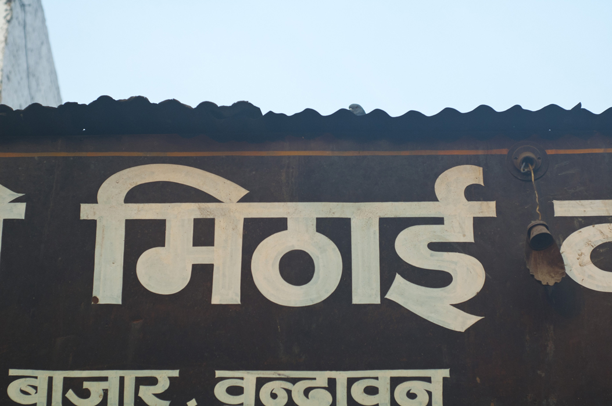
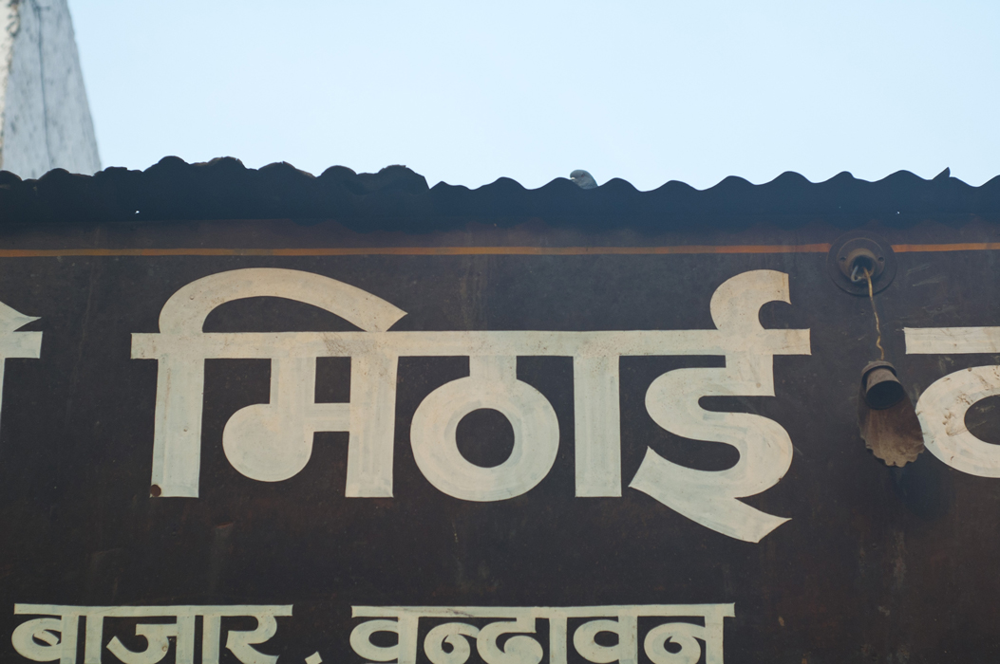
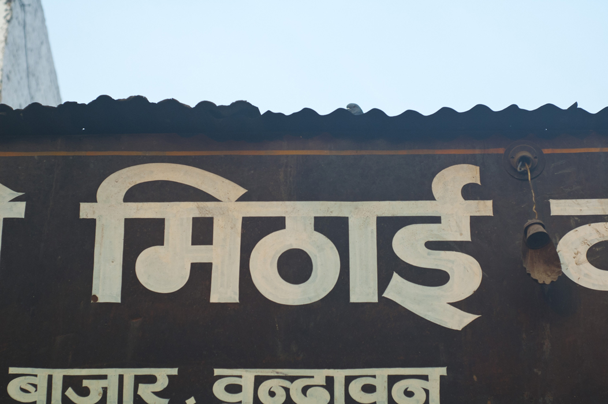
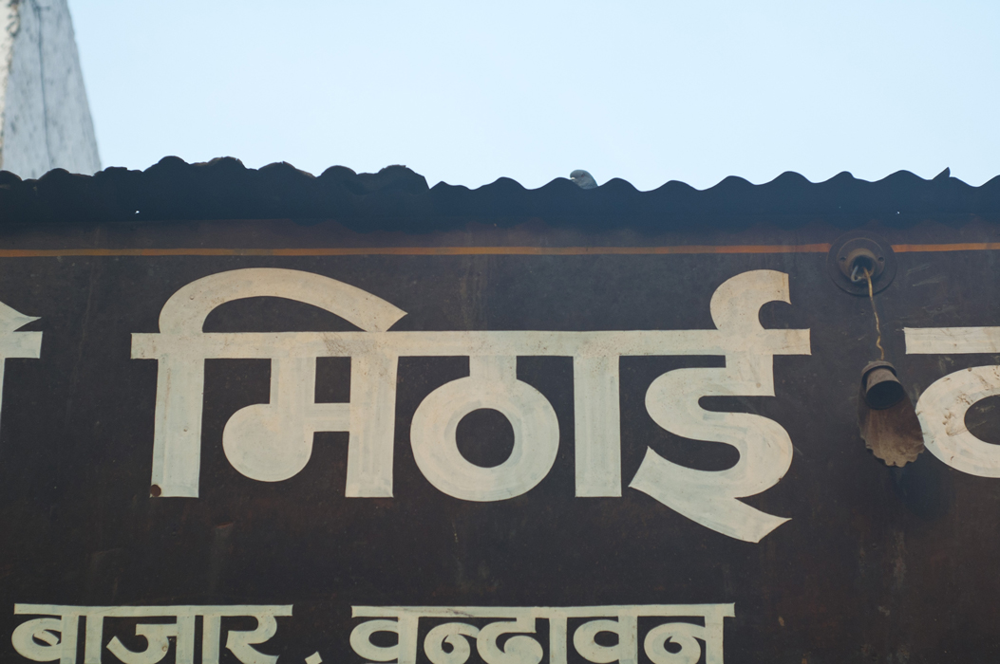

My degree project, titled "Digital Typolitics of Devanagari" is about making type for Devanagari, the script that Hindi is written in. After four years of travel and research in India, I finally feel ready to take a stab at making a typeface for Hindi. See a more complete brief of my project on pheel.us/deva.


I'm working on a typeface to use on screen, especially in the browser. For comfortable screen reading, the type will be heavy and designed to be shown a little big.
Keep up with progress at pheel.us/deva or on my blog.